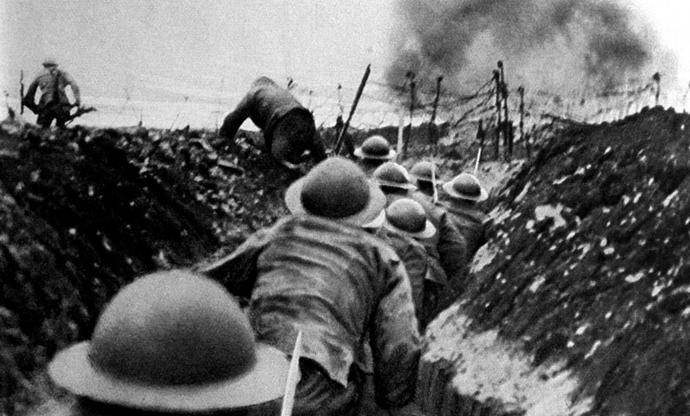
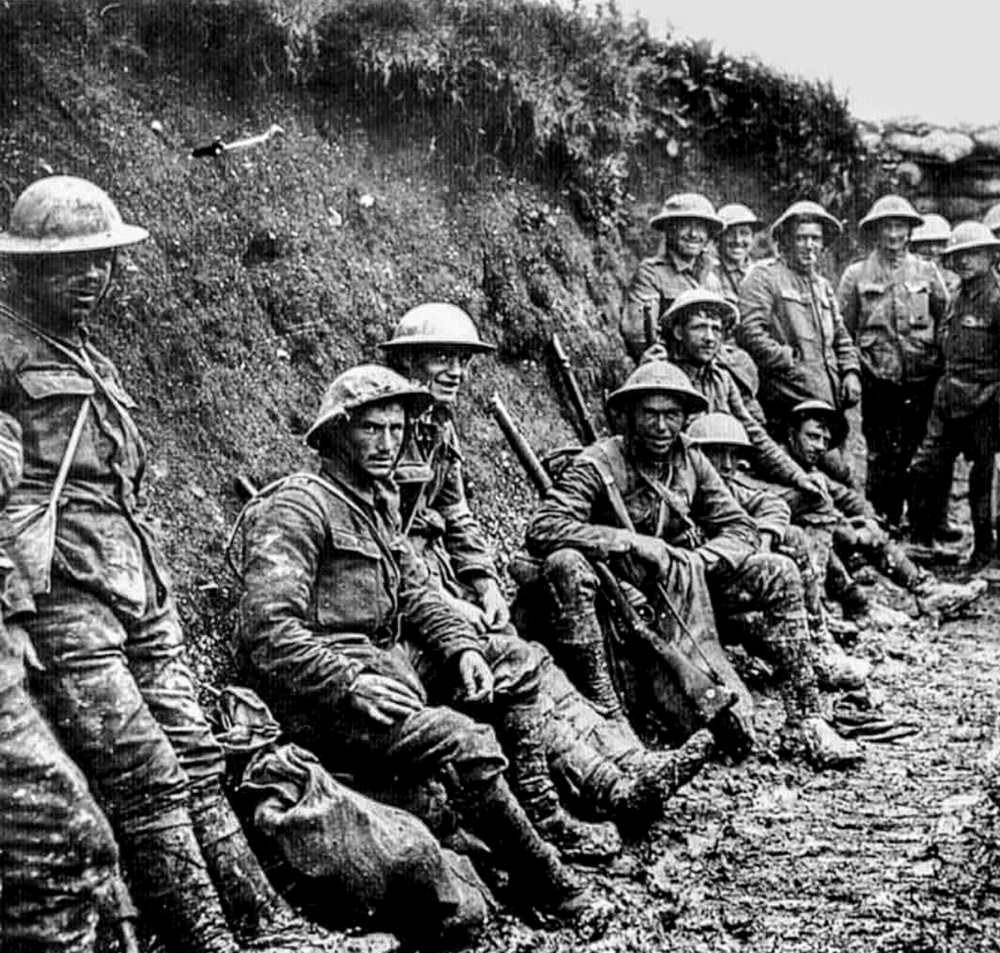
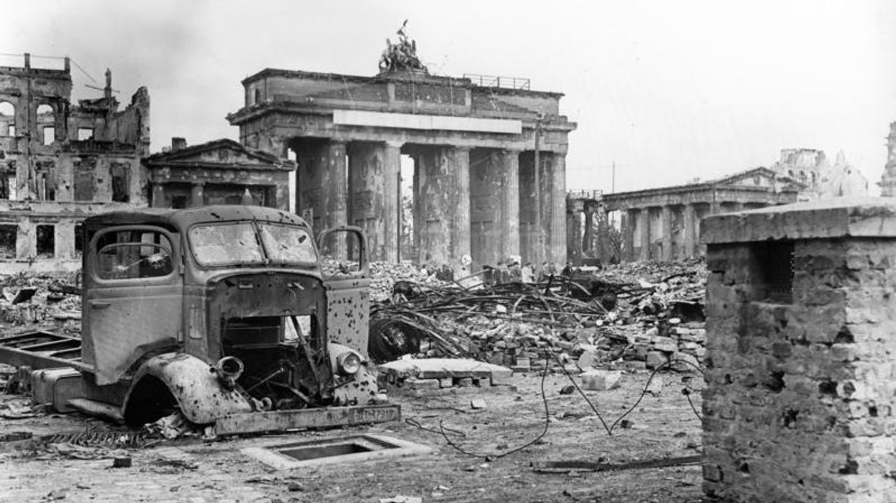

Primera Guerra Mundial
Las guerras mundiales fueron dos conflictos bélicos de la primera mitad del siglo XX que involucraron a las grandes potencias internacionales del momento y a gran parte de los países del mundo.
No fueron las guerras más prolongadas de la historia, tuvieron un alto nivel de destrucción y muertes debido a que afectaron a muchas poblaciones civiles y emplearon las innovaciones tecnológicas de la industria para el desarrollo de armamentos
Puntos importantes
- Conflictos a escala mundial con innovaciones tecnológicas militares.
- Primera Guerra Mundial (1914–1918): Entente vs Potencias Centrales.
- Segunda Guerra Mundial (1939–1945): Aliados vs Potencias del Eje.
- Consecuencias geopolíticas y surgimiento de nuevas superpotencias.
Primera Guerra Mundial
La Primera Guerra Mundial (28 de julio de 1914-11 de noviembre de 1918), también conocida como la Gran Guerra, fue un conflicto mundial entre dos coaliciones: los Aliados (o Entente) y las Potencias Centrales. Los combates tuvieron lugar principalmente en Europa y Oriente Medio, así como en partes de África y Asia-Pacífico, y en Europa se caracterizaron por la guerra de trincheras, el uso generalizado de artillería, ametralladoras y armas químicas (gas), y la introducción de tanques y aviones. La Primera Guerra Mundial fue uno de los conflictos más mortíferos de la historia, con un saldo de unos 10 millones de muertos militares y más de 20 millones de heridos, además de unos 10 millones de muertos civiles por causas que incluían el genocidio.
La Entente: Reino Unido, Francia, Imperio ruso, EE.UU., entre otros.
Las Potencias Centrales: Alemania, Imperio austrohúngaro, Imperio otomano, entre otros.
El 28 de julio, los austrohúngaros iniciaron las hostilidades con el intento de invasión de Serbia. Mientras Rusia se movilizaba, Alemania invadió Bélgica (que se había declarado neutral) y Luxemburgo en su camino a Francia. La violación de la soberanía belga llevó al Reino Unido a declarar la guerra a Alemania. Los alemanes fueron detenidos por los franceses a pocos kilómetros de París, y se inició una guerra de desgaste donde las líneas de trincheras apenas sufrirían variación alguna hasta 1917. Este frente es conocido como frente occidental.
En el frente oriental, el ejército ruso logró algunas victorias frente a los austrohúngaros, pero fueron detenidos por los alemanes en su intento de invadir Prusia Oriental. En noviembre de 1914, el Imperio otomano entró en la guerra, lo que significó la apertura de distintos frentes en el Cáucaso, Mesopotamia y en la península del Sinaí. Italia y Bulgaria se unieron a la guerra en 1915, Rumanía en 1916 y los Estados Unidos en 1917.
Tras años de relativo estancamiento, la guerra empezó su desenlace en marzo de 1917 con la caída del gobierno ruso tras la Revolución de Febrero y la firma de un acuerdo de paz entre la Rusia revolucionaria y las Potencias Centrales después de la Revolución de Octubre, en marzo de 1918. El 3 de noviembre de 1918, el Imperio austrohúngaro firmó un armisticio. Tras una gran ofensiva alemana a principios de 1918 a lo largo de todo el frente occidental, los Aliados hicieron retroceder a los alemanes en una serie de exitosas ofensivas. Alemania, en plena revolución, solicitó un armisticio el 11 de noviembre de 1918, poniendo fin a la guerra con la victoria aliada.
Ver línea del tiempo
Causas
Las causas de las guerras mundiales fueron múltiples. Algunas fueron más inmediatas y desencadenaron el estallido de la violencia, mientras que otras tenían que ver con conflictos que se venían desarrollando desde hacía varios años.
Primera Guerra Mundial: En el caso de la Primera Guerra Mundial, las causas fueron principalmente las tensiones entre las potencias europeas por el reparto colonial de África y Asia y el sistema de alianzas que comprometía a las naciones a apoyarse entre sí en caso de agresión externa. A ello se sumaron la competencia por el predominio industrial y los impulsos nacionalistas.
Segunda Guerra Mundial: Las causas profundas de la Segunda Guerra Mundial se hallan en el fin de la Primera Guerra Mundial y en las humillantes condiciones que se les impusieron a los vencidos (especialmente a Alemania) mediante la firma del Tratado de Versalles (1919).
Las causas profundas de la Segunda Guerra Mundial se hallan en el fin de la Primera Guerra Mundial y en las humillantes condiciones que se les impusieron a los vencidos (especialmente a Alemania) mediante la firma del Tratado de Versalles (1919).
Consecuencias
Devastación humana y material. Más de 16 millones de muertos en la Primera Guerra y entre 40 y 60 millones en la Segunda.
Desaparición de imperios, surgimiento de EE.UU. y la URSS como superpotencias, inicio de la Guerra Fría y creación de la ONU.